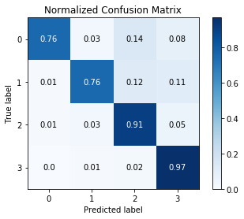

Online education has become very popular and plays a positive impact on learning. Organizations have to consider many factors to make the learning process effective. If these are identified correctly, better results can be obtained. Virtual Learning Environment (VLE) provided by Open University has several factors which effect the student's performance. The purpose of this project is to identify the features that affect the student performance. If these are identified correctly, better results can be obtained. Both students and faculties can be well informed about the progress based on the analysis which provides an opportunity to excel.
Data Preprocessing
The feature engineering part of our analysis consists of merging and feature selection. We used the dataset to train different machine learning algorithms from Scikit-learn. Comparing the different models, we have identified the best suitable model.
It is important to merge all the table and pre-process it. All the missing values are removed. After the data pre-processing, the tables are merged to form a main table which is used for our predictive modelling.

Predictive Models
Analysis has been performed on the merged table and different models are implemented to compare and identify the best suited for the dataset. The data is splitted in 80% training and 20% testing. The prediction is done among the four classes - Distinction, Pass, Fail and Withdrawn.
- Decision Trees
- Random Forest
- Gradient Boosting
This is a top-down approach of evaluation. In this model, the inner nodes are decisions based on which the data is split,and the leaf nodes are the prediction. Decision trees handles data better when there are huge number of parameters are they consider only one feature at every split. The criteria for split is 'Gini'. The accuracy obtained is 98.6%.
A random forest is an ensemble of decision trees created using random variable selection and bootstrap aggregating(bagging). Initially, a group of decision trees are created. For each individual tree, a random sample with replacement of the training data is used for training. Also, at each node of the tree, the split is created by only looking at a random subset of the variables. A commonly used number for each split is the square root of the predictions. It is built using greedy approach selecting the best split points based on purity scores like. The test accuracy obtained is 97.7%.
This model produces a prediction model in the form of an ensemble of weak prediction models, typically decision trees. It builds the model in a stage-wise fashion like other boosting methods do, an it generalizes them by allowing optimization of an arbitrary differentiable loss function. Thus, gradient boosting combines weak 'learners' into a single strong lerner, in an iterative fashion. In the model, the maximum depth is 10 which learns better. The loss function used is 'Huber'. The accuracy obtained is 88.2%.
|
Decision Tree Accuracy |
Random Forest Accuracy |
Gradient Boosting Accuracy |
Evaluation
All the three models have high accuracy. Random Forest gives the highest accuracy among all the models. Confusion matrix can be used to identify the True Positive (TP) and False Positive (FP) rates which gives a measure of correctness of the model
- Decision Tree: It has the highest TP value indicating that the classes are correctly predicted
- Random Forest: It has the highest TP value indicating that the classes are predicting correctly. The mislabeled (off-diagonal) is the least in this case and thus proves to be the best method employed.
- Gradient Boosting: It performs well only when the depth is 10. The mislabel (off-diagonal) class is very high, which indicated that the model is mispredicting one of the classes. This model is not very efficient as it takes a lot of computations to reach a high accuracy.
|
Decision Tree Confusion Matrix |
Random Forest Confusion Matrix  |
Gradient Boosting Confusion Matrix |